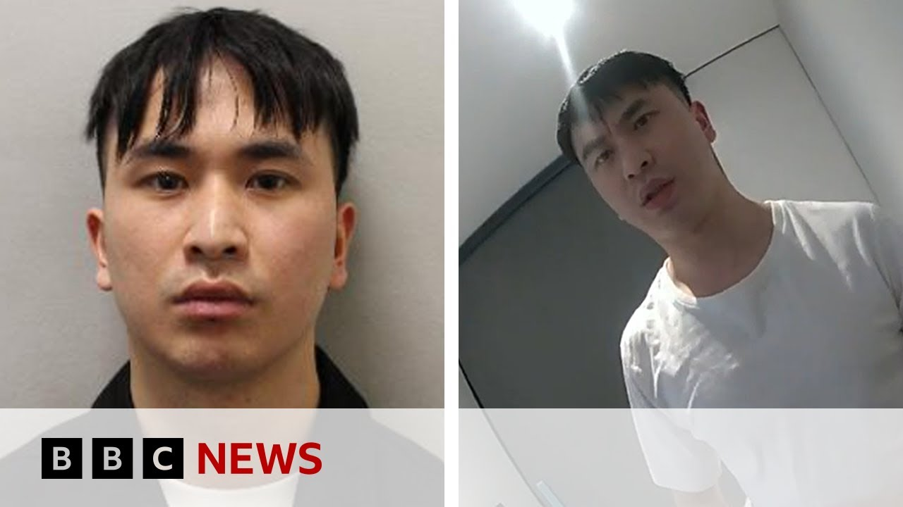

【前博士学生因在伦敦和中国强奸女性被判至少24年监禁 | BBC新闻】
Summary: A former PhD student, Junhao Zhao, has been sentenced to life with a minimum of 24 years for raping 10 women in London and China. The judge described him as highly manipulative and dangerous, citing his lack of understanding of consent and his filming of the assaults. Victims shared harrowing accounts of trauma, and police suspect there may be more victims.
摘要： 前博士学生赵君豪因在伦敦和中国强奸10名女性被判终身监禁，最低刑期24年。法官称其高度操纵且危险，缺乏对同意的理解，并拍摄了袭击过程。受害者讲述了令人心碎的创伤经历，警方怀疑可能还有更多受害者。

⏱️ Estimated Reading Time: 8 min
📚 六级生词 📚 雅思生词 📚 托福生词 📚 专八生词 📚 SAT生词 📚 考研生词 📚 GRE生词 📚 高考生词
Uh I want to bring you up to date with some news from the courts here in uh in London because we are hearing that a former PhD student who raped 10 women in London and China has been jailed for life with a minimum term of 24 years.
我想为您带来伦敦法庭的最新消息，我们获悉一名前博士学生因在伦敦和中国强奸10名女性被判终身监禁，最低刑期24年。
This is Junhao Zho.
这是赵君豪。
Um, so taking into account the number of days he has been on remand, he faces uh almost 23 years before he can be considered for parole.
考虑到他已被还押的天数，他仍需服刑近23年才能获得假释考虑。
In the judge's comment, she called him a highly manipulative young man.
法官在评论中称他是一个高度操纵的年轻人。
She said the women were simply pieces in an elaborate game for one, and she said he had no understanding of the meaning of consent.
她说这些女性只是他精心设计的游戏中的棋子，并称他对同意的含义毫无理解。
Uh, Zhao videoed uh the rapes.
赵拍摄了强奸过程。
The judge said there is a high level of danger because of your distorted thinking.
法官表示，由于他扭曲的思维，他具有高度危险性。
Um his desire to assert power and control meant he was a risk for an indefinite period.
他渴望行使权力和控制意味着他将长期构成威胁。
The judge said in the sentencing remarks.
法官在量刑评论中说道。
So just to bring you the headline from that, uh, a Chinese former PhD student, uh, Junha Zhao has been sentenced to life with a minimum term of 24 years uh, for raping 10 women uh, in London and in China.
简而言之，中国前博士学生赵君豪因在伦敦和中国强奸10名女性被判终身监禁，最低刑期24年。
And of course, we'll bring you more details uh, on that court case, that judgment at the Inner London Crown Court uh, from our reporters as we get them.
当然，我们将从记者那里为您带来更多关于此案的细节，包括内伦敦刑事法庭的判决。
Now, let's uh look further at the attack that saw uh I'm told actually we can go to our correspondent Daniel Sanford who's been following this case in court.
现在，让我们进一步了解这起案件，实际上我们可以联系一直在法庭跟踪此案的记者丹尼尔·桑福德。
Uh Daniel, uh I mentioned just a few of the judge's remarks in sentencing.
丹尼尔，我刚刚提到了法官在量刑时的一些评论。
Tell us more about what happened.
请告诉我们更多细节。
Yeah, sorry you need to.
好的，抱歉您需要稍等。
It took a little bit of a while to get through security to get out here to uh talk to you.
我花了一些时间通过安检才能出来与您交谈。
Judge Rosina Cottage was the trial judge who presided over the trial earlier in the year and sat through those really heartren of women being raped.
罗西娜·科蒂奇法官是今年早些时候主持审判的法官，她听取了那些女性被强奸的令人心碎的证词。
Uh some of them women that the police had managed to identify.
其中一些女性是警方设法确认身份的。
uh many of them women that the police had never managed to identify.
还有许多女性警方从未确认身份。
And actually in the intervening months, one of the women who was unidentified at the time of the trial and was seen being uh raped at an unknown location in China had actually come forward uh to the police and uh her victim impact statement was able to be uh read to the judge today to outline the huge effect that it had on her uh to have been uh drugged by Jean Hao and raped by him.
实际上，在审判期间未被确认身份的一名女性，曾在中国某未知地点被强奸，现已向警方报案，她的受害者影响陈述今天被宣读给法官，概述了被赵君豪下药并强奸对她的巨大影响。
how she'd afterwards uh felt that she had to go and uh have uh treatment for AIDS in case she'd contracted HIV during the rape because Jen Haou never used condoms during during any of these uh rapes.
她之后感到必须去接受艾滋病治疗，以防在强奸过程中感染HIV，因为赵君豪在这些强奸中从未使用安全套。
Uh this morning was taken up with hearing from uh her victim personal statement but also uh from the victim personal statements from the two other women uh that Zanharo had raped that had been identified.
今天上午主要听取了她和其他两名已被确认身份的受害者的个人陈述。
They were um women who'd been raped in London, women that had got to know Jean Harzo socially.
她们是在伦敦被强奸的女性，曾与赵君豪有过社交往来。
He'd sort of lured them in to a trap effectively and had then uh drugged them uh almost certainly with uh GHB uh and had then raped them and in one case filmed the rape, in another case uh filmed the buildup uh to the rape and then uh taken pictures of her after uh the rape.
他有效地将她们诱入陷阱，几乎可以肯定是用GHB下药，然后强奸她们，并在一个案件中拍摄了强奸过程，在另一个案件中拍摄了强奸前的准备过程，并在强奸后拍摄了她的照片。
And there are really heart-rending accounts by those women of uh how they now suffer from lots of anxiety.
这些女性讲述了她们现在如何遭受严重焦虑的令人心碎的经历。
Uh how they struggled to sleep, how they'll never be able to forgive him, and how they believe uh that Jen Hojo will remain a danger to society forever and that he should never be uh released.
她们如何难以入睡，如何永远无法原谅他，以及她们认为赵君豪将永远对社会构成威胁，永远不应被释放。
Five members of the jury who sat in that trial in February and March came back today uh for the sentencing.
今年二月和三月参与审判的五名陪审员今天回来参加量刑。
Uh they are jurors that have seen things that uh most jurors don't have to see.
他们是看到了大多数陪审员无需看到的画面的陪审员。
Just uh horrendous pictures of women being raped.
只是女性被强奸的可怕画面。
Rosina Cottage Casey, the judge thanked them for coming back uh for the sentencing today.
罗西娜·科蒂奇法官感谢他们今天回来参加量刑。
And then she went through uh briefly uh but in heart-ren was videos of rapes.
然后她简要但令人心碎地回顾了强奸视频。
and then the two accounts from the women who've been identified and she said that uh she had no doubt uh that he would remain a danger to people in society uh and so she said that that the sentence inevitably had to be a life sentence and when she was considering the minimum time before he could be released from prison was a cottage case he said that she's set that minimum term as 24 years though because He though because he has spent some time in prison awaiting trial that was reduced to 22 years 227 days.
然后她听取了两位已确认身份的女性的陈述，并表示她毫不怀疑他将对社会构成威胁，因此她认为判决必须是终身监禁，而在考虑他可以被释放的最低刑期时，她将其定为24年，但由于他已在候审期间服刑，刑期减至22年227天。
But a sentence essentially Jen Hazo has been sentenced to a life sentence with 24 years in prison for 11 rapes of 10 different women three of whom have now been identified.
但本质上，赵君豪因对10名不同女性的11起强奸被判终身监禁，最低刑期24年，其中3名女性现已确认身份。
But I should say that that this case doesn't end there because uh police have continued uh to go through all of the evidence uh that they've gathered from Jehanzo's devices.
但我应该说此案并未结束，因为警方仍在审查从赵君豪设备中收集的所有证据。
They believe there could be 50 or more uh other victims and so far 24 more women have come forward since the trial to say that they may have been either sexually assaulted or raped by Jean Ha.
他们认为可能还有50名或更多其他受害者，自审判以来已有24名女性站出来表示她们可能曾被赵君豪性侵或强奸。
Okay, Daniel, thank
好的，丹尼尔，谢谢